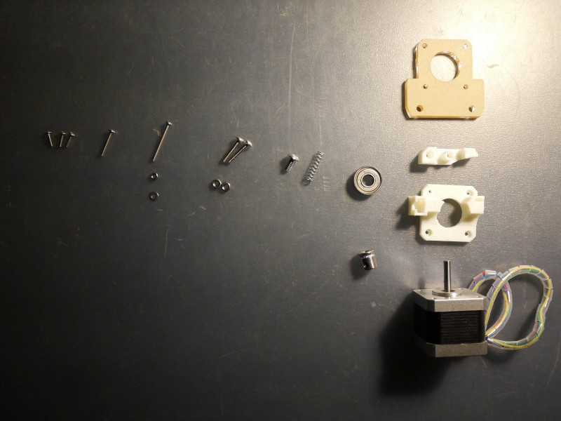
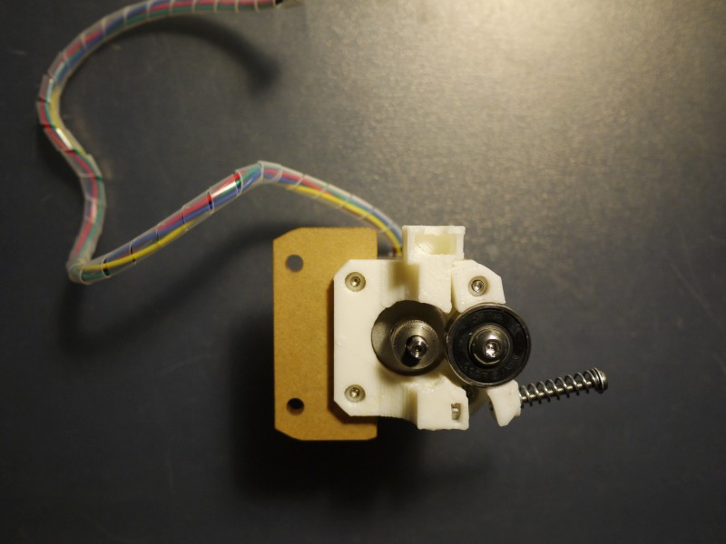

挤出机的组装
零件列表
| 零部件 | 个数 |
| 亚克力安装板 | 1 |
| 打印件 | 1套 |
| 608滚动轴承 | 1 |
| 挤出齿轮轴 | 1 |
| 20mm 弹簧 (ID5,OD6) | 1 |
| M3*10 | 3 |
| M3*20 | 1 |
| M3*30 (含螺母和垫圈) | 1 |
| M4*20mm (含螺母) | 2 |
| M5*10 | 1 |
| 电机 | 1 |
安装步骤
准备好所有需要的挤出机零部件

把电机准备好，注意出线向上
把亚克力安装板放上
把挤出机主体打印件放上，注意安装孔要对其。
使用3个M3*10 的螺栓把它们固定到电机上。
把608滚动轴承安装到挤出机压制件上。
利用一个M5*10的螺栓防止滚动轴承掉落
把组装好的压制件放到挤出机主体上，注意方向。
用一个M3*20螺栓把压制件固定到挤出机主体上。
安装压制弹簧，先放入一个M3螺母（主体的右侧下方）
固定压制件另一端前先把挤出齿轮轴固定到电机轴上，注意咬齿要和608轴承对齐，


然后用M3*30螺栓穿过M3垫片和弹簧固定住压制件另一端，这样压制件正好压住挤出机齿轮轴的咬齿。
把两个M4*20螺栓装入亚克力安装孔，后面用来固定到机框。
完工，一个完整又精美的的挤出机！